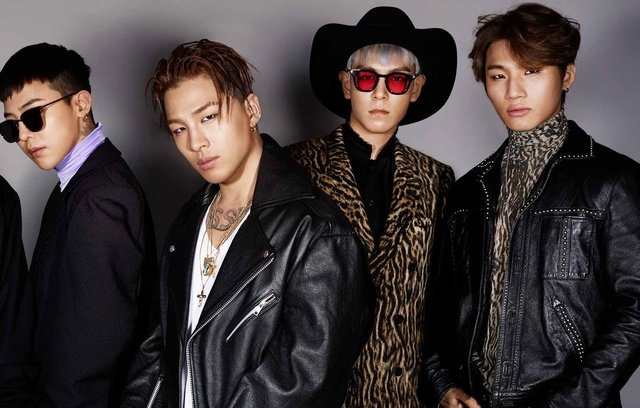
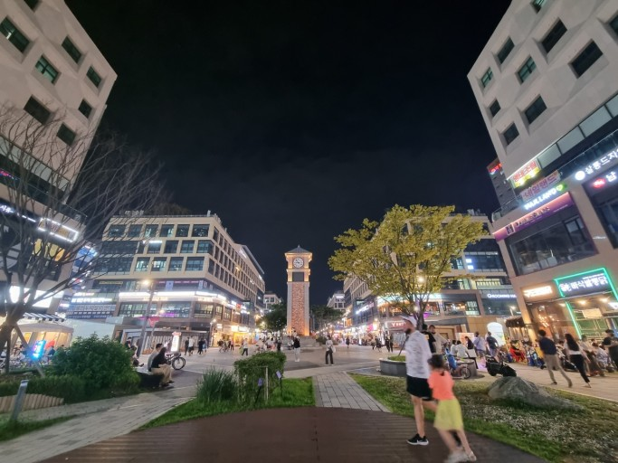
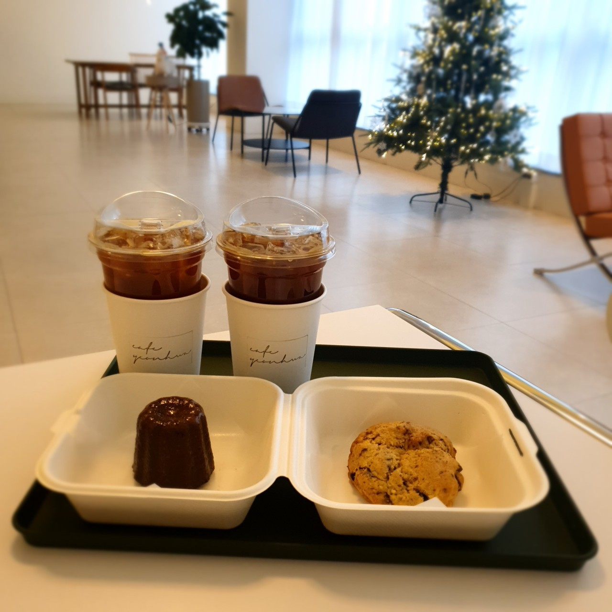

- Name : 권순호 / Kwon soon ho
- School : Kangwon National University CE 2022 ~ Ing
- height : 175cm / weight : 70kg
- MBTI : ENFJ
- Hometown : Si_Heung
- Favorite Food : Meat
- Favorite Sports : Baseball
- Favorite Game : League Of Legend
- Family : Father / Mother / Sister
<Time_Tabla>
|
월 |
화 |
수 |
목 |
금 |
1_th
(09:00~10:00) |
|
자바프로그래밍1 |
컴퓨터개론 |
|
|
2_th
(10:00~11:00) |
|
웹프로그래밍 |
이산수학 |
3_th
(11:00~12:00) |
|
4_th
(12:00~13:00) |
|
|
|
5_th
(13:00~14:00) |
|
고급파이썬프로그래밍 |
고급파이썬프로그래밍 |
|
웹프로그래밍 |
6_th
(14:00~15:00) |
|
|
7_th
(15:00~16:00) |
|
자료구조 |
자료구조 |
|
|
8_th
(16:00~17:00) |
|
|
|
Welcome! Hello, this is Kwon Soonho's introduction website. I was born in 1999
and I am 25 years old in Korean age. Let me introduce myself briefly. I was safely
discharged from the military in 2021 and I took the test as soon as I was
discharged from the military and entered Kangwon National University in 2022.
I transferred from chemical engineering to computer engineering last year because
I was interested in studying coding. I think programming is good. So I'm living
hard in many ways. That's it for my brief introduction and there's a navigation
bar at the top so you can learn more about me by clicking on it! Thank you for
reading it !!
-
Hobby
- Listening to music

<My favorite Atist : Bigbang>
- Watching a movie
<My favorite : Get out>
- Clothing shopping
- Dream
- Backend developer
-->Favorite programming language : C++
- Video_Editor
I'll introduce my hobby and dream. First of all, my first hobby is listening to music.
Listening to music makes me feel better, so I'm using it as my hobby. My favorite singer
is BIGBANG and I even put a link to the song. Next, my hobby is watching movies. When I watch
a movie, I can feel things that I haven't experienced before. So i love movie. Lastly, my hobby
is internet shopping. It's because wearing new clothes makes me feel refreshed. I have attached
a link to my favorite shopping mall. Next, my dream is to become a back-end developer. It's my
dream to have a strange pleasure in coding. My favorite programming language is C++ language.
My other dream is to be a video editor. I was happy to provide fun videos to people,
so I thought of it as a dream.
- Hometown
- Si_Heung
 <-- Bae_Got
- Recommends
- ☆ 카츠오모이
<카츠오모이>
- ★ 카페 연화

<카페 연화>
I'll tell you about my hometown! My hometown is Siheung-si,
Gyeonggi-do. There are many good things in Siheung City,
but Baegot New Town is very famous among them.The first
picture is Baegot with a beautiful night view. Then I'll
recommend two good restaurants now in Baegot! The first
is a Japanese pork cutlet restaurant called Katsuomoi,
which you can see in the picture. I love pork cutlet so
much that I've been to many famous pork cutlet restaurants,
and I'm confident that this place is one of the most delicious!
The next place to explain is called Cafe Yeonhwa. It's a
cafe with beauty, style, and convenience. It was the best
cafe I've ever been to! Especially, I think the best advantage
is that the interior is wide and the seats are convenient.